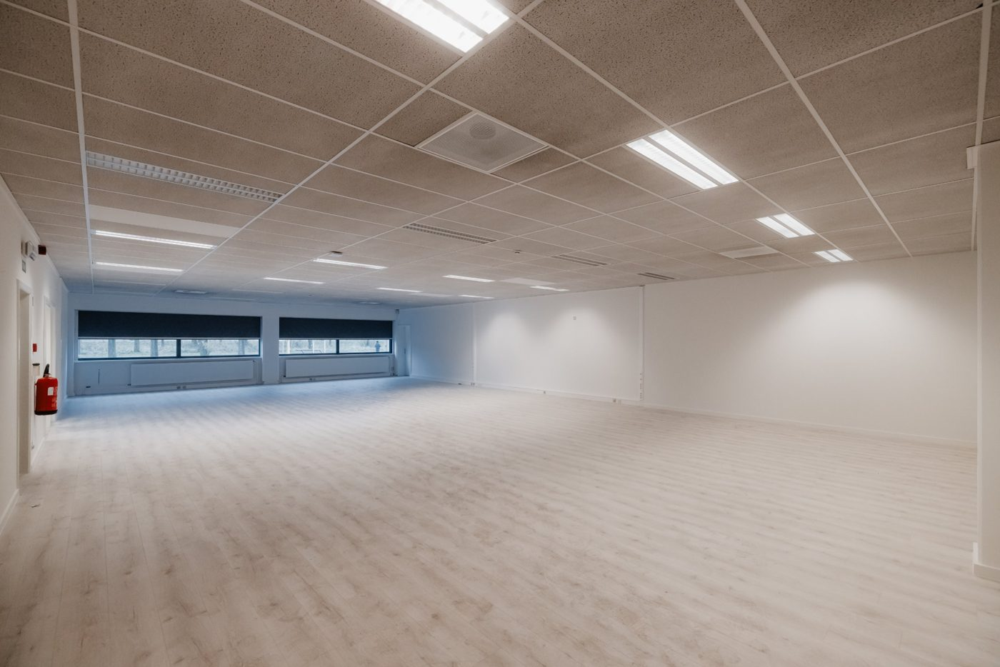
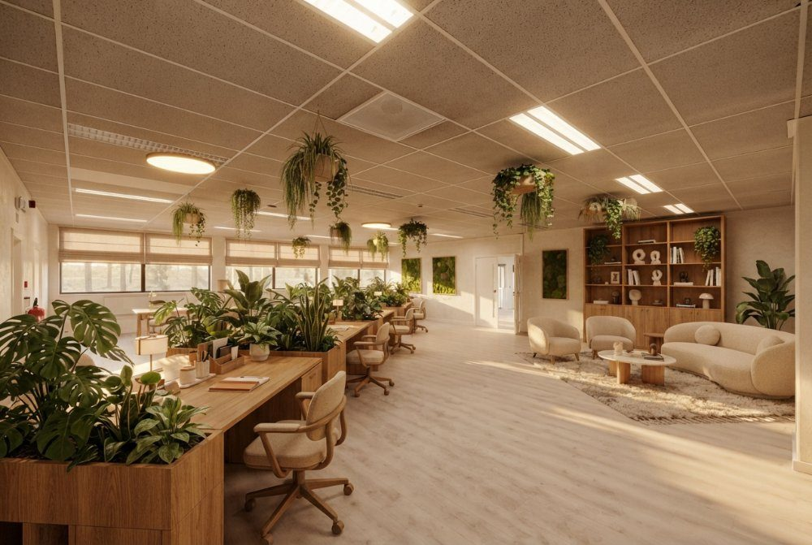
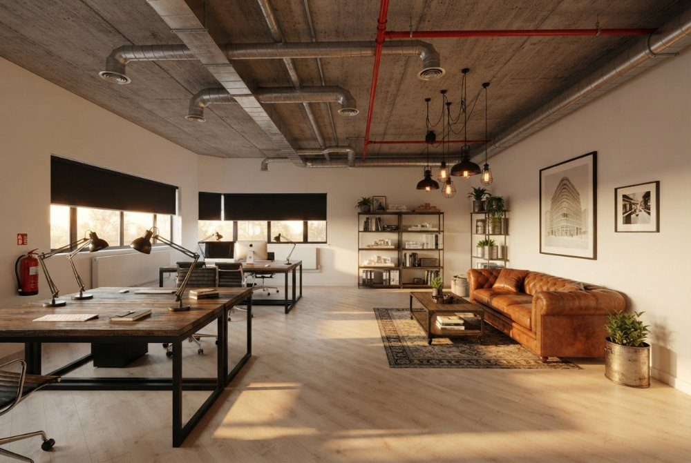
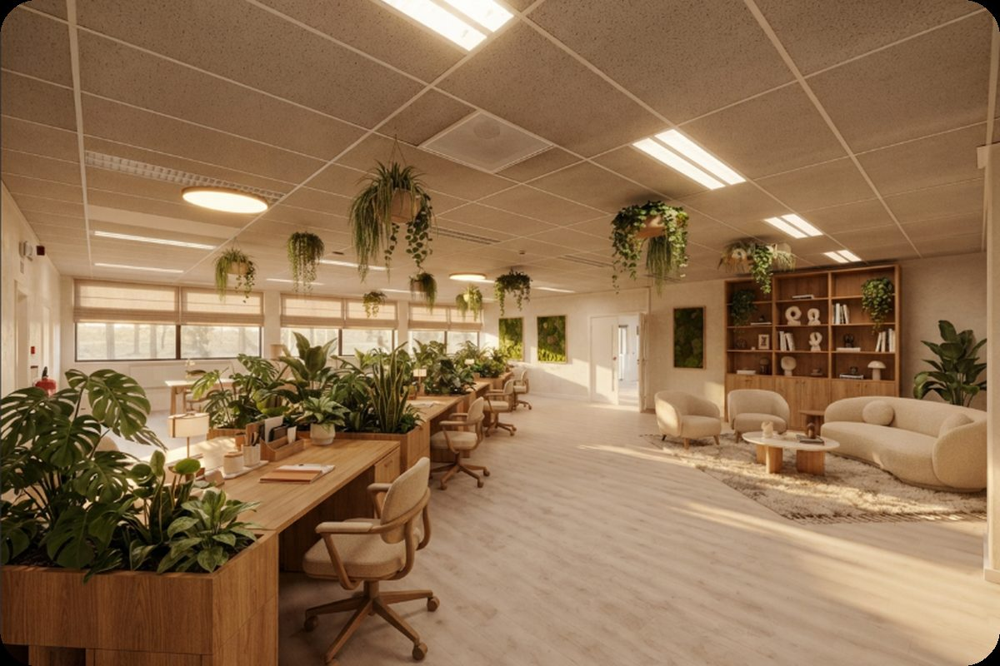
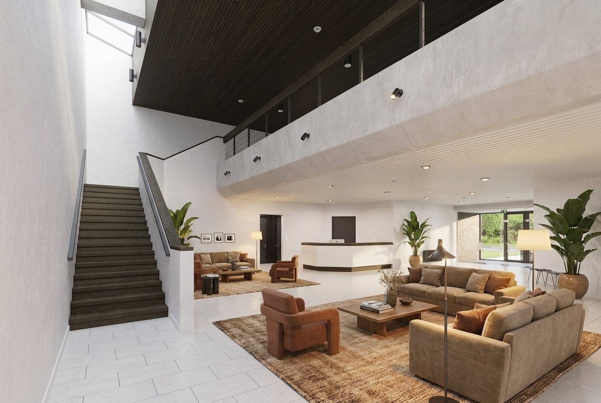

Van een lege ruimte naar een ruimte die huurders willen zien.
Alles wat we samen bouwden in Figma Weave, stap voor stap. Herbekijk de flows, kopieer de prompts en probeer het zelf opnieuw.
Arne Goossens, creative technologist bij iO.
Ik werk in het creatieve team van iO, tussen designers, motion designers en UI-designers. Mijn rol: AI-workflows bouwen die hun werk sneller en schaalbaarder maken, zonder dat het creatieve vakmanschap verdwijnt. De designer blijft aan het stuur, AI doet het zware, herhalende werk.
Wat ik vandaag met jullie deel, komt rechtstreeks uit die praktijk: hoe je met één foto, een goede prompt en een paar nodes tot een volwaardige beeldreeks en film komt.
Wat is Figma Weave?
Figma Weave is een canvas in je browser waarop je AI-modellen en bewerkingstools aan elkaar koppelt. Je kiest per stap het model dat het best past: het ene voor beelden, een ander voor video, nog een ander voor camerabewegingen. Het resultaat van de ene stap gaat automatisch naar de volgende.
Weave begon als Weavy, een start-up uit Tel Aviv (2024). Eind oktober 2025 maakte Figma bekend dat het Weavy overneemt en verder uitbouwt als Figma Weave.
Bronnen: Figma blog, Fast Company.
Veel modellen, één plek
Vandaag gebruikten we onder meer Nano Banana, Qwen, Kling en de Compositor, allemaal op hetzelfde canvas.
Jij houdt de regie
Elke tussenstap is zichtbaar. Je ziet waar het misloopt en past alleen die node aan.
Bulk in één klik
Eén lijst met vijftien stijlen geeft vijftien interieurs, zonder vijftien keer te prompten.
Herbruikbaar
Een flow die werkt, gebruik je opnieuw met een nieuwe foto. Of je deelt hem als eenvoudige tool met collega's.
Wat is een node-systeem?
Denk aan een recept. Elke node is één stap, elke lijn geeft iets door aan de volgende stap. Klik op een node om te zien wat hij doet.
Lege foto
Hier begint alles: de foto van de lege ruimte. Elke volgende stap gebruikt deze foto als basis, zodat het standpunt en de afmetingen van de ruimte kloppen.

Eén bewerking: een foto inladen, een prompt schrijven, een model laten draaien, een video monteren.
De lijn tussen twee nodes. De kleur toont wat er doorgaat: beeld, tekst of video.
Een model laten werken. Pas dan worden er credits gebruikt. Je ziet de prijs vooraf.
Een open plek in je prompt die per regel uit een lijst wordt ingevuld. Zo maak je bulk.
Een kader rond nodes die samen één stap vormen. Ideaal om een canvas leesbaar te houden.
De montagetafel van Weave: lagen, tijdlijn, audio en export, zonder het canvas te verlaten.
Zes groepen, één verhaal.
Zo zag ons canvas eruit aan het eind van de dag. Elke groep is een stap; klik om er meteen naartoe te gaan.
Eén foto, vijftien stijlen.
We gaven Weave één foto van een lege kantoorruimte en een lijst met vijftien interieurstijlen. Eén klik later stonden er vijftien ingerichte versies naast elkaar.

Sleep over het beeld. Standpunt, ramen en vloeroppervlak blijven exact gelijk; alleen de inrichting verandert.
Wat je hier leert
- Een Text Iterator vullen met één stijl per regel.
- Een variabele in je prompt zetten, zodat elke regel een eigen beeld wordt.
- Goedkoop verkennen met een snel model, en pas daarna verfijnen met een duurder model.
- Altijd zeggen wat moet blijven: camerastandpunt, afmetingen, ramen.
De vijftien stijlen

Klik op een miniatuur om de stijl en het resultaat te bekijken.
De prompt maakt het verschil
Onze eerste versie gaf koel licht en zette in elk beeld een vergaderbox. Door het licht en de vrijheid van de stijl expliciet te beschrijven, werd versie 2 warmer en gevarieerder.

De prompt die we gebruikten
Het deel tussen haakjes vult Weave per regel in met een stijl uit de lijst.
Eén ruimte, elk perspectief.
We kozen de groene stijl en vroegen nieuwe camerastandpunten. Twee manieren, met een duidelijk verschil.
Via prompt
We beschreven zes standpunten in tekst. Nano Banana Pro houdt stijl, meubels en licht perfect vast, maar het standpunt verschuift maar weinig. Handig voor variatie, niet voor echte camerabewegingen.
Wat je hier leert
- Kies de node die doet wat je vraagt, niet de duurste.
- Echte camerarotatie stuur je beter in graden dan in woorden.
- Consistente beelden zijn goud waard voor een brochure en voor begin- en eindframes van een animatie.
Van beeld naar beweging.
Met Kling maakten we van stilstaande beelden korte clips. De sterkste truc: een beginbeeld en een eindbeeld geven, en het model vult de beweging ertussen in.
Prompt voor clip A
Wat je hier leert
- Met begin- en eindframe bepaal jij waar de clip start en eindigt.
- Beschrijf één duidelijke camerabeweging per clip.
- Sluit af met wat je níet wil: geen mensen, geen flikkering, geen vervorming.
- Clip B bewoog te weinig en viel af. Niet elke run is raak; dat hoort erbij.
Monteren zonder Weave te verlaten.
De Compositor is een eenvoudige montagetafel in Weave. Je sleept clips naar lagen, knipt ze op de tijdlijn, zet muziek en stem eronder en exporteert een mp4.
Lagen
Elke clip krijgt een laag. Wat bovenaan staat, ligt in beeld bovenop. Handig voor een logo of eindbeeld dat over de film heen komt.
Tijdlijn
Sleep de randen van een clip om in- en uitpunt te kiezen. Een donker stuk is een deel van de clip dat je niet gebruikt.
Audio en export
Muziek en voice-over komen als aparte lagen. Zet het volume van de muziek lager onder de stem. Export levert een mp4 op.
Wat je hier leert
- Video-lagen dempen als je eigen muziek gebruikt.
- Kijk na elke wijziging frame per frame rond de cuts: een gat van één frame geeft een zwarte flits.
- De export van de Compositor speelt iets minder vloeiend af dan de losse clips. Voor de allerhoogste kwaliteit monteer je de clips nadien in een videobewerker.
De film: eerst leeg, dan gevuld.
De stem vertelt het verhaal, het beeld volgt. Zolang de stem over een lege ruimte spreekt, blijft de ruimte leeg. Pas op "een plek waar je elke dag wil binnenstappen" vult ze zich.
De voice-over
"Een lege ruimte. Of een plek waar je elke dag wil binnenstappen. Ontdek wat jouw ruimte kan worden."
Wat je hier leert
- Laat de stem de beelden sturen, niet andersom.
- Nooit hetzelfde shot twee keer. Een kortere film is beter dan opvulling.
- Knip op de beat van de muziek, dan voelt de film strak.
- Geef tekst op het eindbeeld genoeg leestijd: hier bijna drie seconden.
De opbouw op de tijdlijn
Prompt voor een leeg shot
Bijtekenen en het licht kiezen.
In de lobby tekenden we met de Painter ruwe vormen op de foto: groen voor planten, oranje voor een zithoek. Nano Banana Pro maakte er echte meubels van, en een tweede stap zette de lobby in avondlicht.

Wat je hier leert
- Je hoeft niet te kunnen tekenen: ruwe vlakken volstaan.
- Zeg in de prompt wat elke kleur betekent en dat de strepen moeten verdwijnen.
- Het model voegt soms meer toe dan je tekende. Hoe preciezer je tekent en beschrijft, hoe minder het verzint.
Een leermoment: Relight 2.0
We probeerden eerst de aparte Relight 2.0-node. Die veranderde de architectuur zelf: de tegelvloer werd parket, er kwamen ramen bij en het beeld werd bijgesneden. Voor vastgoed is dat onbruikbaar. Met Nano Banana Pro en de opdracht "verander enkel het licht" bleef alles staan.
Bekijk de twee prompts
Bouw je eigen interieurprompt.
Elke goede prompt van vandaag had dezelfde vijf delen. Kies hieronder je eigen invulling, kopieer de prompt en plak hem in een Prompt-node in Weave.
Tip: zet deze prompt in Weave tussen een Import-node met je foto en een Nano Banana-node. Eerst met Nano Banana 2 Lite verkennen, je favoriet daarna met Nano Banana Pro.
Regie houden, ook met AI.
Zes stappen, telkens één vraag.
Zo dachten we vandaag van een lege ruimte naar een film. Je kan dezelfde vragen stellen bij elk nieuw pand.
| Stap | De vraag die je stelt | In Weave |
|---|---|---|
| 1 · Doel bepalen | Voor wie is het beeld en wat moet het tonen? | Groepen benoemen per stap |
| 2 · Breed verkennen | Welke richtingen zijn er allemaal mogelijk? | Text Iterator en een snel model |
| 3 · Kiezen | Welke richting past bij dit pand en deze huurder? | Resultaten naast elkaar |
| 4 · Verfijnen | Klopt elk detail, en blijft het pand echt? | Nano Banana Pro, Painter |
| 5 · Vertellen | Welk verhaal vertelt de reeks of de film? | Kling en de Compositor |
| 6 · Checken | Is alles correct en eerlijk in beeld? | Frame per frame nakijken |
Een goede prompt heeft een vaste vorm.
Schrijf je prompts in het Engels: de modellen begrijpen dat het best. Hieronder de prompts van vandaag, ontleed per onderdeel.
Een beeldprompt, ontleed
Een videoprompt, ontleed
Maak dit kantoor mooi en modern.
Het model kiest alles zelf, ook het standpunt en het licht.
Furnish this exact office in a Scandinavian style: light oak desks, boucle chairs, white pendants. Keep the camera angle, windows and floor exactly the same. Calm morning daylight. Photorealistic.
Zes camerabewegingen
Naar een detail toe. Voor focus.
Van detail naar overzicht. Voor een onthulling.
Draaien op één plek. Om de ruimte te tonen.
Rond een plek cirkelen. Voor diepte.
Omhoog naar een overzicht. Voor schaal.
Zijwaarts meeschuiven. Voor parallax.
Woorden voor licht
Warm, laag zonlicht met lange schaduwen.
Fris en helder, zachte schaduwen.
Egaal en rustig, bijna geen schaduw.
Blauwe lucht buiten, warm binnen.
Binnenverlichting aan, gezellig.
Vriendelijk, zonder harde contrasten.
Prompt-recepten voor elke vraag
| Je vraag | Sleutelwoorden in je prompt |
|---|---|
| Hoe ziet deze lege ruimte er ingericht uit? | Furnish this exact space · in the style of … · Keep the camera angle |
| Hoe voelt dit 's avonds? | Change only the lighting · Keep every object · Blue hour, lamps on |
| Wat als hier een zithoek komt? | Turn the painted strokes into … · Remove every stroke · Keep the architecture |
| Hoe beleef je de ruimte? | One camera move · Slow and steady · No people, no flicker |
Vijf problemen, vijf oplossingen.
Blijft iets fout gaan? Pas de prompt aan in plaats van opnieuw te runnen en op geluk te hopen.
| Wat je ziet | Wat je doet |
|---|---|
| Het standpunt verschuift | Voeg toe: "Keep the exact camera angle and perspective." Of gebruik Qwen Multiangle voor bewuste camerabewegingen. |
| Er komt te veel bij | Zeg wat er niet mag: "Do not add any other objects." Teken in de Painter preciezer. |
| De video vervormt | Maak de beweging trager en eenvoudiger: "very slow, steady, no warping". Kies één beweging. |
| Het licht klopt niet | Beschrijf het licht in een aparte zin, met tijdstip en richting: "late-afternoon sunlight through the windows". |
| Alles lijkt op elkaar | Maak de stijlen in je lijst meer verschillend: andere materialen, kleuren en meubels per regel. |
Snel en goed, maar geen landmeter.
- Het verzint soms dingen erbij.
- Het levert geen exacte maten of oppervlaktes.
- Niet elke run is raak, ook niet met een goede prompt.
- Tekst en logo's in beelden kloppen zelden.
- Clips duren ongeveer 5 seconden. Langer vraagt montage.
Drie checks.
Ramen, vloer en architectuur zoals in het echt.
Geen elementen die het pand niet heeft of niet kan krijgen.
Vermeld "AI-visualisatie" bij het beeld.
Zes oefeningen voor na vandaag.
Elke oefening duurt ongeveer een kwartier. Gebruik een foto van een eigen pand. Vink af wat je gedaan hebt; dat onthoudt deze browser.
Waar iO verder kan helpen.
Flows als tool
Wij bouwen de flows en publiceren ze als eenvoudige app: jullie team dropt een foto en krijgt stijlen, standpunten en een film terug.
Een WDP-beeldstijl
Een eigen stijlmodel, zodat elk pand in dezelfde herkenbare look wordt gevisualiseerd.
Formats en talen
Eén render wordt elke banner en elk social format, met voice-overs in meerdere talen.
Een film per pand
Storyboard van onze art directors, uitgewerkt tot een open After Effects-file die jullie kunnen hergebruiken.
Opvolgsessie
Na een maand samen jullie eigen resultaten bekijken en de flows bijsturen.
Training voor het team
Dezelfde dag voor andere collega's, op maat van hun eigen vragen en panden.
Vijf vragen over vandaag.
Even checken wat er is blijven hangen. Geen punten op je rapport, beloofd.
Credits per node, zoals gemeten.
De prijzen die Weave toonde tijdens het bouwen van deze flows (november 2026). Prijzen kunnen wijzigen; Weave toont altijd de actuele kost vóór je een run start.
| Node | Waarvoor | Credits |
|---|---|---|
| Nano Banana 2 Lite | Snel verkennen, bulk van stijlen | 3 per beeld |
| Qwen Edit Multiangle | Camera draaien in graden | 4 |
| Nano Banana Pro | Hoge kwaliteit, bijtekenen, licht | 11 |
| Kling 4.0 | Clip uit één beeld | 40 |
| Kling First & Last Frame | Clip tussen begin- en eindbeeld | 55 |
| Relight 2.0 | Licht wijzigen (veranderde hier de architectuur) | 10 |
Vragen of verder bouwen?
Wil je een flow uitbreiden, een eigen tool voor je team publiceren of een volgende ruimte aanpakken? Laat het me weten, dan bouwen we verder.
arne.goossens@iodigital.com